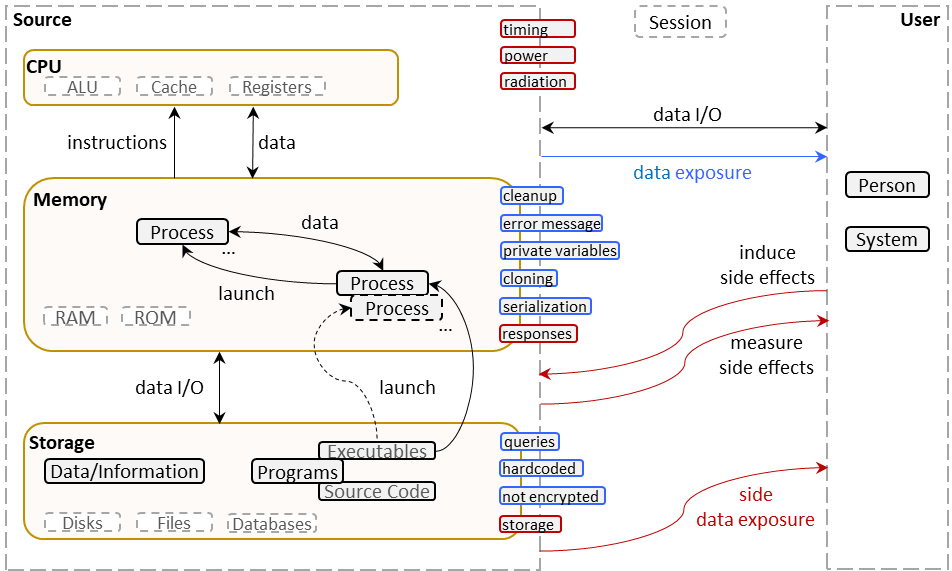

BF Model of Information Exposure
Information and Data
The terms data and information are often used interchangeably. Data is “a set of values
of qualitative or quantitative variables” [1]. Information is “any entity or form that provides
the answer to a question of some
kind or resolves uncertainty" [2]. To what extent data is informative to someone depends on how
unexpected it is to
that person. A difference between data and information is that data has no meaning, while information has
meaning. Information and data are on a continuum. Bits in memory are data. Without external
context (meaning), the bits might represent an integer, an address, a set of flags
or other low-level information. At a higher level, the integer could be someone’s
age, the number of characters in a document, or a temperature. Typically, a person’s
age is considered information, whereas “temperature” may be considered data, since
it may be yesterday’s high temperature (where?) or the current temperature in a furnace.
Without further meaning, it is unclear whether the temperature is in Centigrade, Fahrenheit,
Kelvin, or something else!
In software, information is generated by processing data. [3] We distinguish between
information that is sensitive and information that is not.
Certain kinds of information can be indirectly sensitive: when revealed can lead to
harmful consequences.
If sensitive information at rest in a file or a database is encrypted (see BF class
ENC), then information cannot actually be exposed. If information is communicated
outside the system via a secure channel, it cannot be exposed, either.
Sensitive information includes credentials, system data, state data, cryptographic data, digital documents,
and personally identifiable and business data.
Credentials include password, token, smart card, digital certificate, and biometrics, such as fingerprints,
hand configuration, retina, iris, and voice characteristics. System data could be pathnames, configurations,
logs, and Web usage. State data includes ooperational data, such as SQL table names and column names, ports
used, and server names. Cryptographic data is hashes, keys, and keying material, such as cryptographic keys,
initialization vectors, shared secrets, domain parameters, random seeds, salts, and nonces.
Personally identifiable data corresponds to personally identifiable information (PII) and personally
identifiable financial information (PIFI). PII is any information that could be used to distinguish one person
from another – e.g. social security number (SSN), driver’s license number, identification card number. PIFI
includes financial account numbers with security codes/ access codes/ password. There is also protected health
information, which includes a patient's medical record or payment history, and payment card information, such as
cardholder name, service code, expiration date, CVC2/ CVV2/ CID value, PIN or PIN block, content of magnetic
stripe, etc.
Business data covers intellectual property and trade secrets, operational and inventory data, and
industry-specific data, in addition to customer and employee data.
Information Exposure Model
To ground information exposure, we have developed a general model. “Exposure” is to any entity that should not
have that information, not just information that is a security concern.
Fig. 1 presents our BF information exposure bugs model, showing through what channels software could expose
information.

Fig 1. BF Model of Information Exposure - click on image for detailed
view.
Information is stored on disks in files or in databases. Programs (source code and
executables) are also stored on a disk in files and do not require any other resources. [4] A
program is comprised of functions’ invocations. Most functions process input data into output
information or data. However, some functions receive only control flow, e.g. to display
information, error messages, dialogs; or to act on a global data value or when a state
variable has changed or needs to be assessed. [5] A process is a program in execution and holds
resources such as CPU, memory, disk, and input/output. A program can involve more than one process. [4] A session is a temporary, interactive information interchange between two or more devices,
or between a computer and a user (e.g. login session). [6]
Information exposure may happen when either unintended information is carried, or an unintended recipient gets
the information. The exposure may be accidentally or because of attacker’s actions.
Information could leak through legitimate channels during normal use of software. For example, via
information display, via queries (including query strings in SQL queries and GET request), from hardcoded
information (password, cryptographic key, etc.), class cloning, serializable classes, when public methods access
private variables, inappropriate cleanup, or from session and process environments. Cleanup includes removing
previously used information, buffer cleanup (dead store removal), and use of
realloc(). Sessions may leak information via session-ID length, sessions state
boundaries, caching,
and improper cleanup.
A diagnostic channel, or error channel, is a legitimate channel that helps users and developers
diagnose, find, and correct
input or code errors. Information may be leaked via error messages, exception handling
messages, or other responses to erroneous inputs or erroneous data processing. If
an attacker forces and internal fault, it may divulge sensitive information, including
details on the software implementation logic, to the attacker. [7]
A side channel is not intended to transmit information; however, it does transmit information [8]. Information may be revealed or deduced due to discrepancies or behavioral inconsistencies.
For example, conveying different
responses (e.g. an operation is successful or not), taking different time (e.g. CPU timing),
consuming different power, using different storage, or emitting different electromagnetic radiation. Behavioral
inconsistency could be internal or external.
A covert channel is a side channel that is created deliberately as a hidden communication channel [9]. Unfortunately, a covert channel may be created by optimization techniques, such
as compiler optimizations [10] and speculative executions [11].
In a side channel, it is common for an attacker to control both the part that induces the side effect and the
part that measures it [12, 13, 14]. In other cases, there
could be two collaborating attackers: an unauthorized user controlling the part that induces the side effect
and a third party controlling the part that measures it. There could be also only a passive attacker, who
observes an existing (not induced)
behavioral inconsistency. Usually, statistical analysis of the measurements is involved. [15]
describes creating covert channels using TCP/IP. Examples of side/covert attacks are Meltdown and Spectre [16], as well as the inference attacks [17].
References